Soru 1Cevap: D
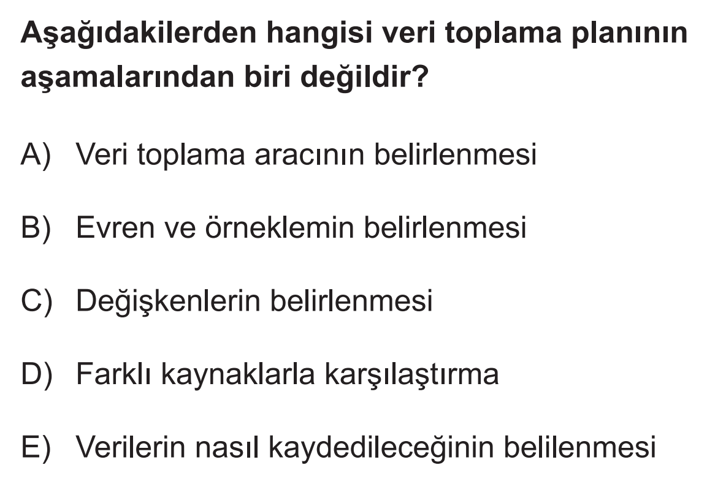
Çözüm
- Veri toplama planı: araç, evren–örneklem, rastgelelik, değişkenler, nerede/ne zaman/nasıl, kayıt, gizlilik–etik.
- "Farklı kaynaklarla karşılaştırma" dijital veri kaynakları kullanılırken dikkat edilen bir husustur.
- Plan aşaması olmayan → D.
Cevap: D
Soru 2Cevap: E
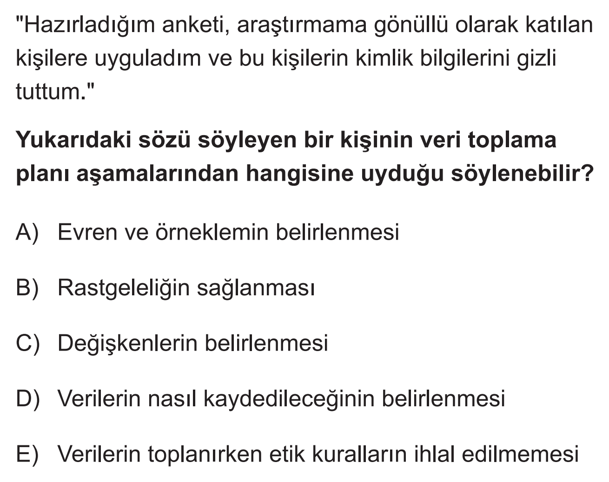
Çözüm
- Gönüllü katılım ve kimlik bilgilerinin gizli tutulması etik kurallardır.
- Bu, planın "verilerin gizliliğinin sağlanması, etik kurallara uyulması" aşamasıdır.
- Cevap E.
Cevap: E
Soru 3Cevap: B
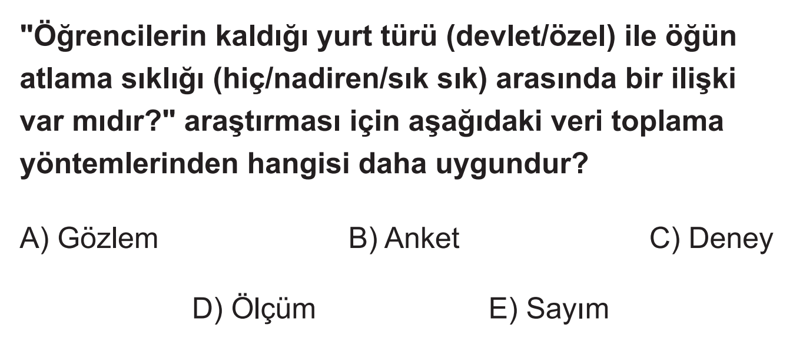
Çözüm
- Yurt türü ve öğün atlama sıklığı kişilere sorularak öğrenilebilir.
- Çok sayıda öğrenciden kısa sürede kategorik yanıt toplamak için en uygun araç ankettir.
- Cevap B.
Cevap: B
Soru 4Cevap: B
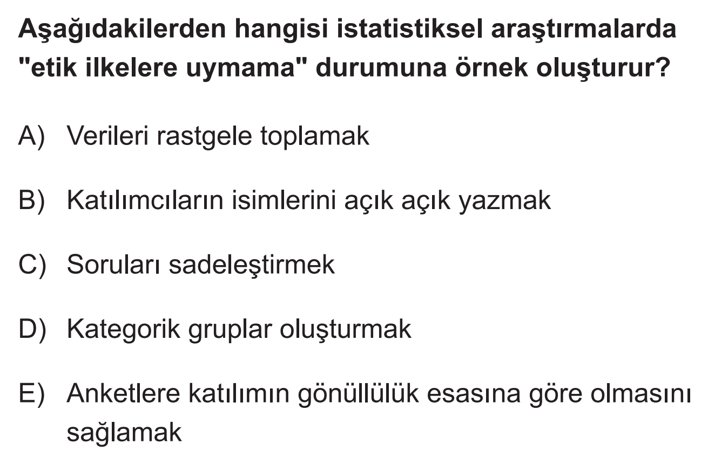
Çözüm
- Etik ilkeler: gönüllülük, gizlilik, dürüstlük, nesnellik.
- Katılımcıların isimlerini açıkça yazmak gizlilik ilkesini çiğner.
- Etik ilkelere uymama örneği → B.
Cevap: B
Soru 5Cevap: C
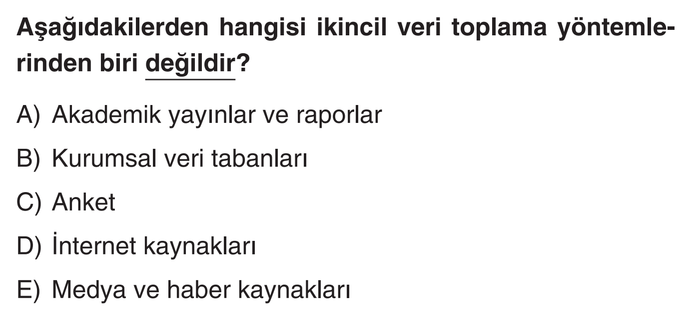
Çözüm
- İkincil veri, başkaları tarafından daha önce toplanmış hazır veridir.
- Akademik yayınlar, kurumsal veri tabanları, internet ve medya kaynakları ikincildir.
- Anket araştırmacının doğrudan uyguladığı birincil yöntemdir → C.
Cevap: C
Soru 6Cevap: D
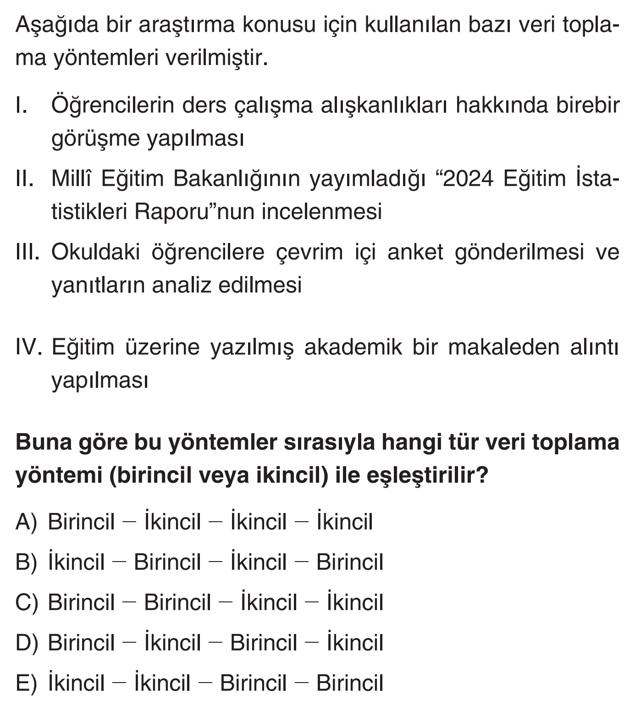
Çözüm
- Birebir görüşme ve çevrim içi anket araştırmacının kendisinin topladığı veridir → birincil.
- Bakanlık raporu ve akademik makale hazır veridir → ikincil.
- Sıra: Birincil – İkincil – Birincil – İkincil → D.
Cevap: D
Soru 7Cevap: C
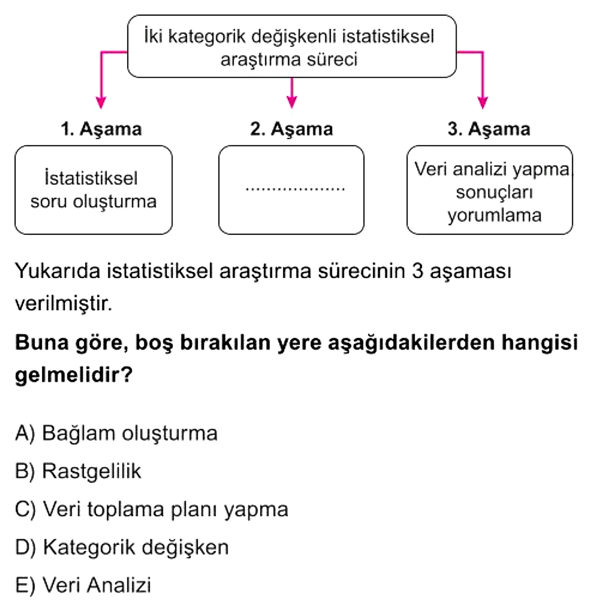
Çözüm
- İstatistiksel araştırma süreci: soru oluşturma → veri toplama planı → veri toplama → analiz/yorum.
- Şemada 1. aşama soru oluşturma, 3. aşama analiz ve yorumlamadır.
- Boşluk: Veri toplama planı yapma → C.
Cevap: C
Soru 8Cevap: D
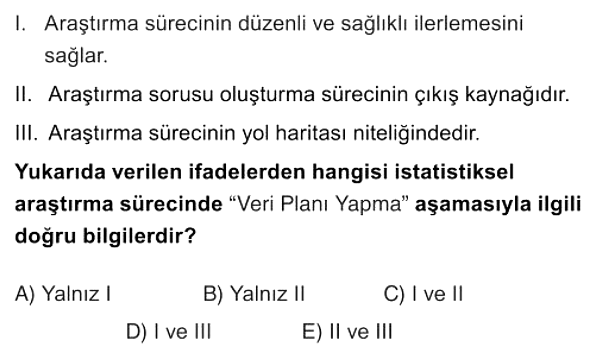
Çözüm
- Veri toplama planı araştırmanın düzenli ilerlemesini sağlar (I doğru).
- Plan bir yol haritasıdır (III doğru).
- Planın kaynağı araştırma sorusudur; plan sorunun çıkış kaynağı değildir (II yanlış). Cevap: I ve III.
Cevap: D
Soru 9Cevap: D
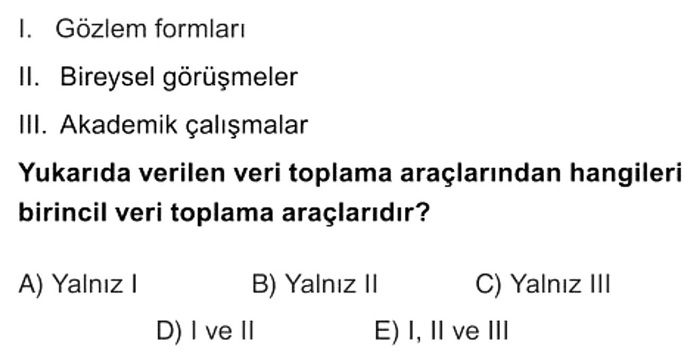
Çözüm
- Birincil araçlar araştırmacının kendisinin uyguladığı araçlardır.
- Gözlem formları ve bireysel görüşmeler birinciIdir.
- Akademik çalışmalar hazır kaynaktır → ikincil. Cevap: I ve II.
Cevap: D
Soru 10Cevap: E
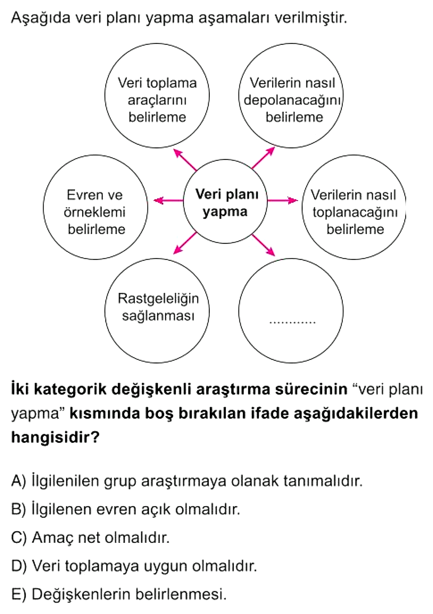
Çözüm
- Veri planı aşamaları: araç, evren–örneklem, rastgelelik, değişkenler, nasıl toplanacağı, nasıl kaydedileceği/depolanacağı, gizlilik.
- Şemada değişkenlerin belirlenmesi eksik.
- A–D seçenekleri araştırma sorusu ölçütleridir. Cevap E.
Cevap: E
Soru 11Cevap: C
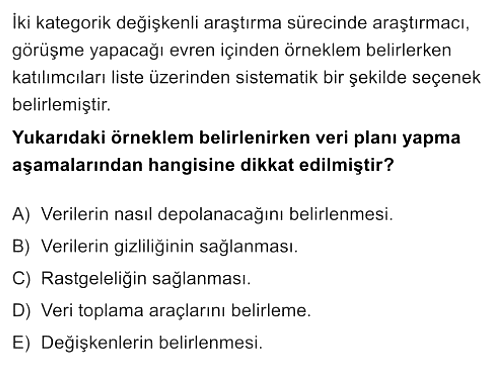
Çözüm
- Katılımcıların liste üzerinden sistematik biçimde seçilmesi taraflı seçimi önler.
- Bu, her bireyin seçilme şansını eşitlemeye yöneliktir.
- Dikkat edilen aşama: rastgeleliğin sağlanması → C.
Cevap: C
Soru 12Cevap: B
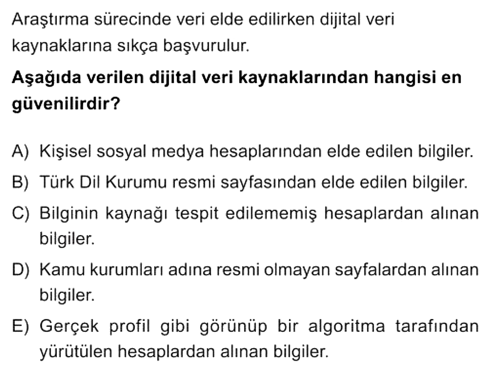
Çözüm
- Güvenilir dijital kaynaklar resmî kurumların sayfalarıdır.
- Kişisel hesaplar, kaynağı belirsiz ya da resmî olmayan sayfalar ve bot hesaplar güvenilir değildir.
- En güvenilir: Türk Dil Kurumu resmî sayfası → B.
Cevap: B
Soru 13Cevap: B
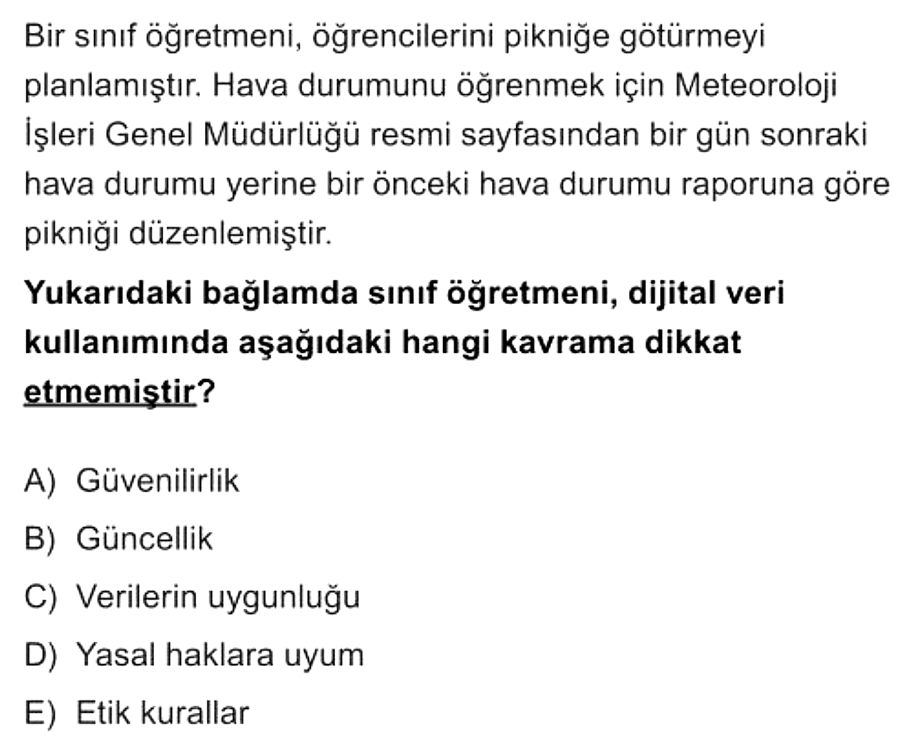
Çözüm
- Öğretmen resmî ve güvenilir bir kaynak kullanmıştır.
- Ancak güncel tahmin yerine bir önceki raporu kullanmıştır.
- Dikkat edilmeyen kavram: güncellik → B.
Cevap: B
Soru 14Cevap: D
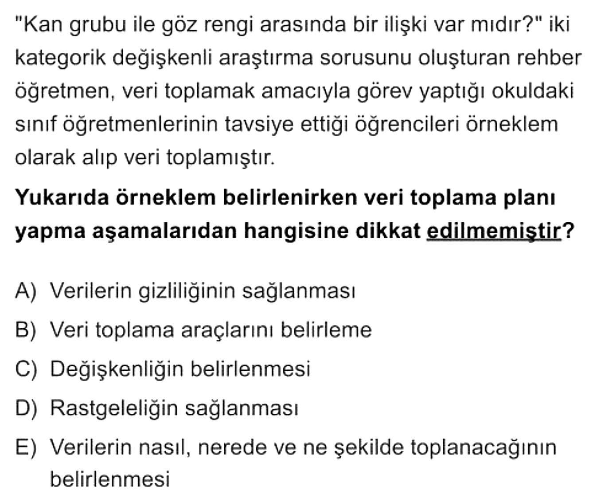
Çözüm
- Örneklem, öğretmenlerin tavsiye ettiği öğrencilerden oluşmuştur.
- Bu seçim taraflıdır; her öğrencinin seçilme şansı eşit değildir.
- Dikkat edilmeyen aşama: rastgeleliğin sağlanması → D.
Cevap: D
Soru 15Cevap: E
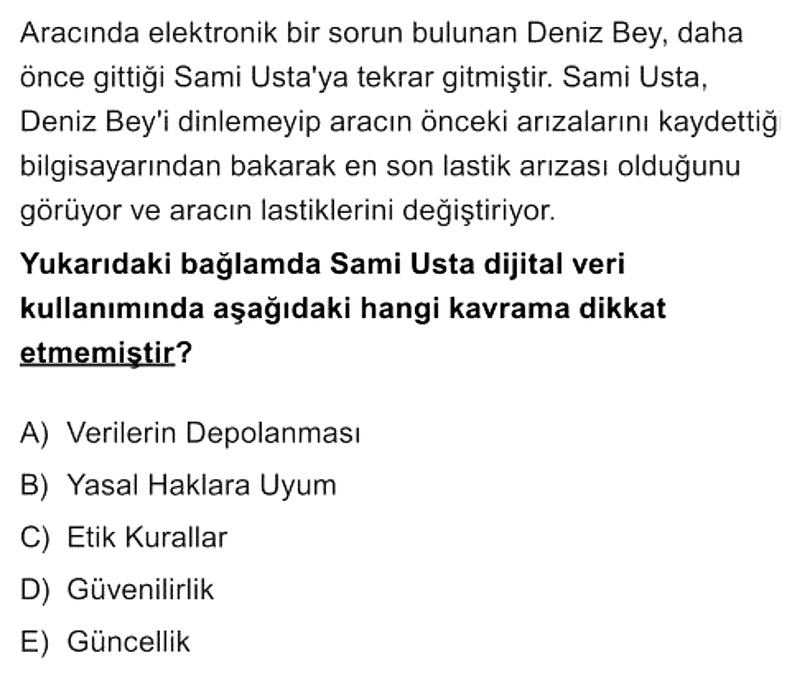
Çözüm
- Sami Usta aracın önceki arızalarının kaydına bakmıştır.
- Oysa sorun yeni ortaya çıkmıştır; eski kayıt güncel durumu yansıtmaz.
- Dikkat edilmeyen kavram: güncellik → E.
Cevap: E
Soru 16Cevap: A
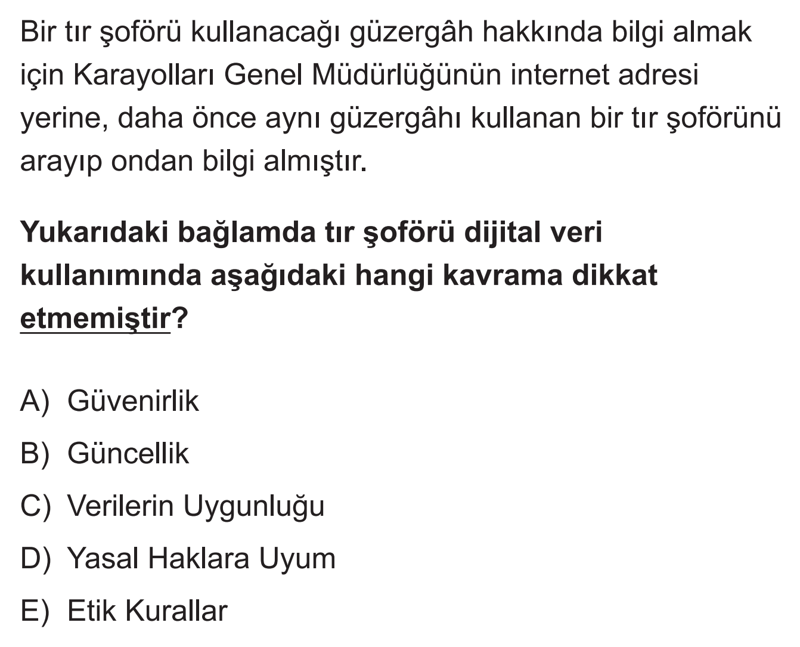
Çözüm
- Resmî kurum (Karayolları) güvenilir bir dijital kaynaktır.
- Şoför bunun yerine bir kişinin söylediklerine dayanmıştır.
- Dikkat edilmeyen kavram: kaynağın güvenilirliği → A.
Cevap: A
Soru 17Cevap: C
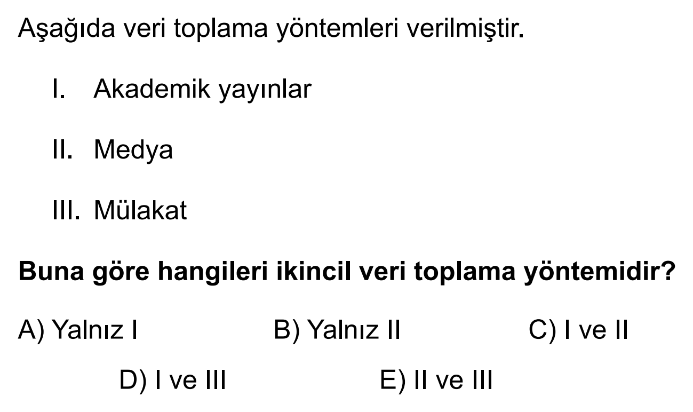
Çözüm
- İkincil yöntemler hazır veri kullanır: akademik yayınlar, medya ve haber kaynakları.
- Mülakat araştırmacının doğrudan yaptığı görüşmedir → birincil.
- Cevap: I ve II.
Cevap: C
Soru 18Cevap: E
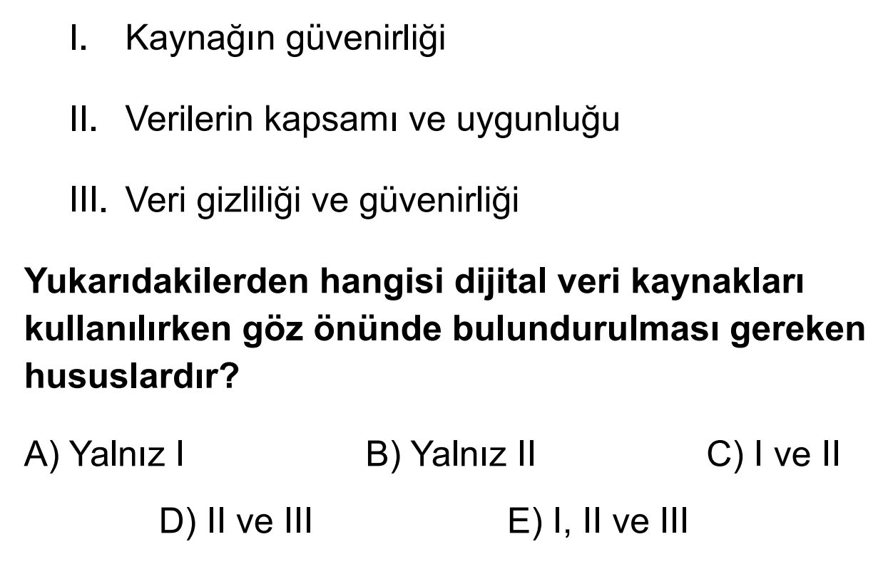
Çözüm
- Dijital veri kullanılırken: kaynağın güvenilirliği, güncellik, kapsam ve uygunluk, lisans, referans, gizlilik ve güvenlik, karşılaştırma.
- Verilen üç ifadenin üçü de bu listededir.
- Cevap: I, II ve III.
Cevap: E
Soru 19Cevap: C
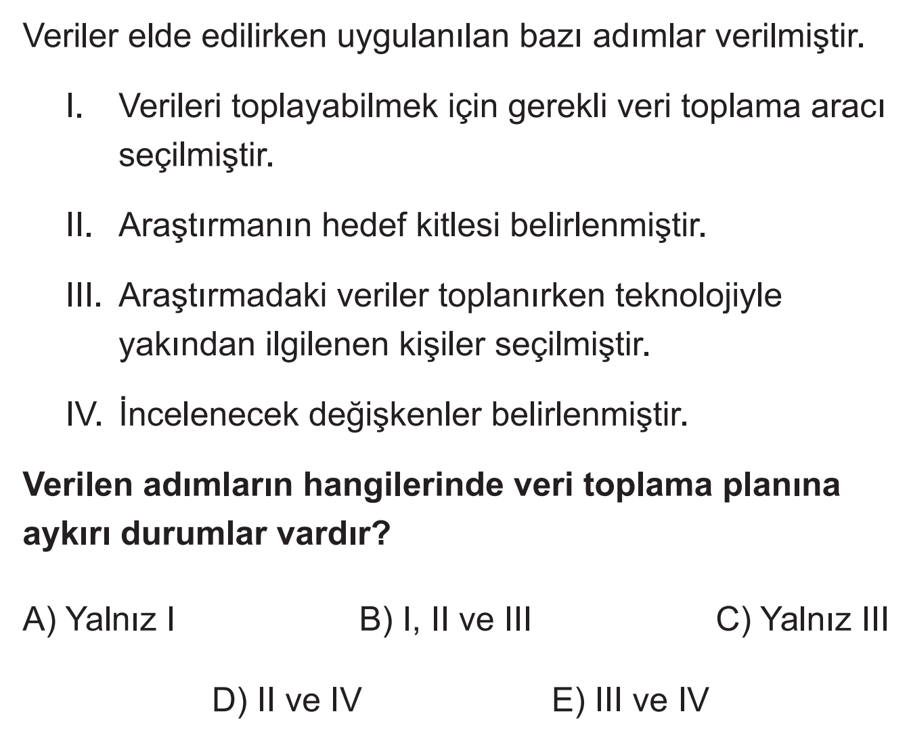
Çözüm
- I (araç seçimi), II (hedef kitle = evren), IV (değişkenler) plana uygundur.
- III'te katılımcılar teknolojiyle ilgilenen kişilerden seçilmiş; rastgelelik ilkesi bozulmuştur.
- Aykırı durum yalnız III → C.
Cevap: C
Soru 20Cevap: A
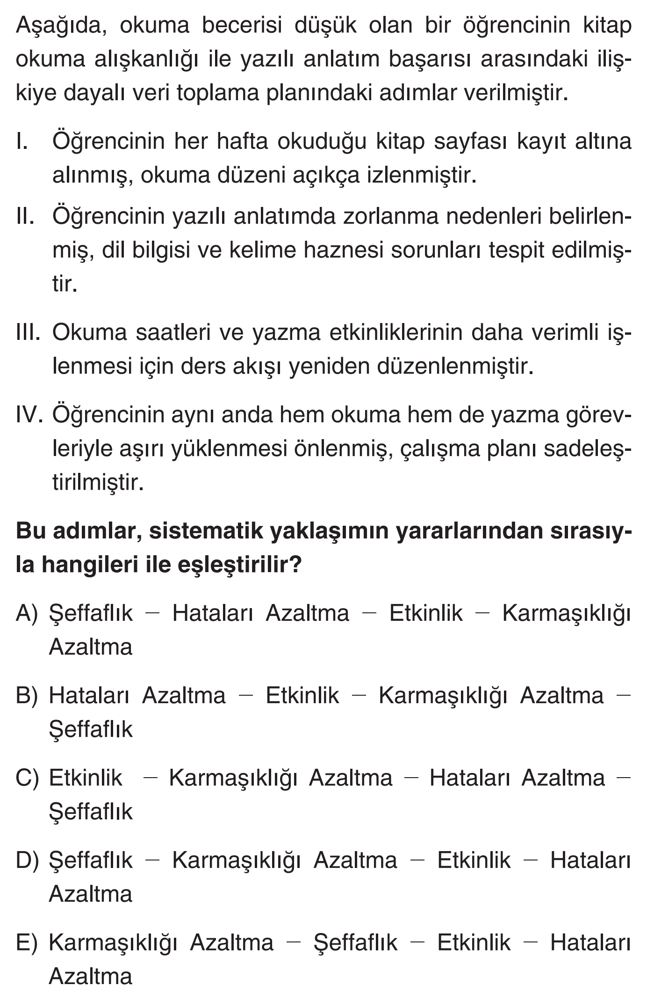
Çözüm
- I: düzenli kayıt → süreç izlenebilir → şeffaflık.
- II: zorlanma nedenleri tespit → hataları azaltma; III: verimli işleme → etkinlik.
- IV: plan sadeleştirme → karmaşıklığı azaltma. Sıra A.
Cevap: A
Soru 21Cevap: B
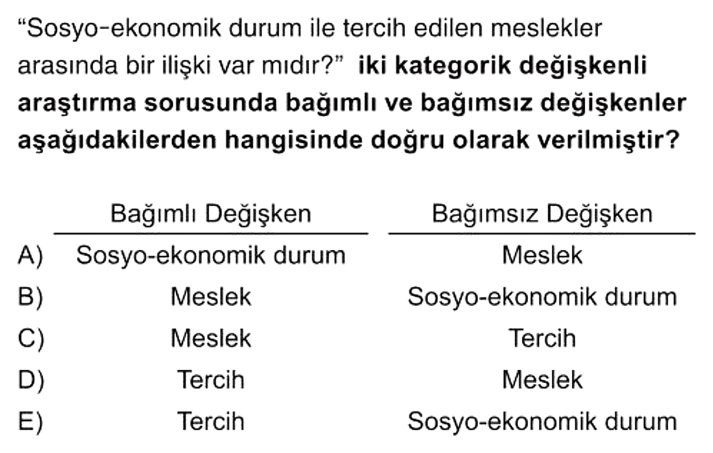
Çözüm
- Bağımsız değişken etkileyen, bağımlı değişken etkilenen olarak düşünülür.
- Sosyo-ekonomik durumun meslek tercihini etkileyip etkilemediği incelenir.
- Bağımlı: meslek, bağımsız: sosyo-ekonomik durum → B.
Cevap: B
Soru 22Cevap: C
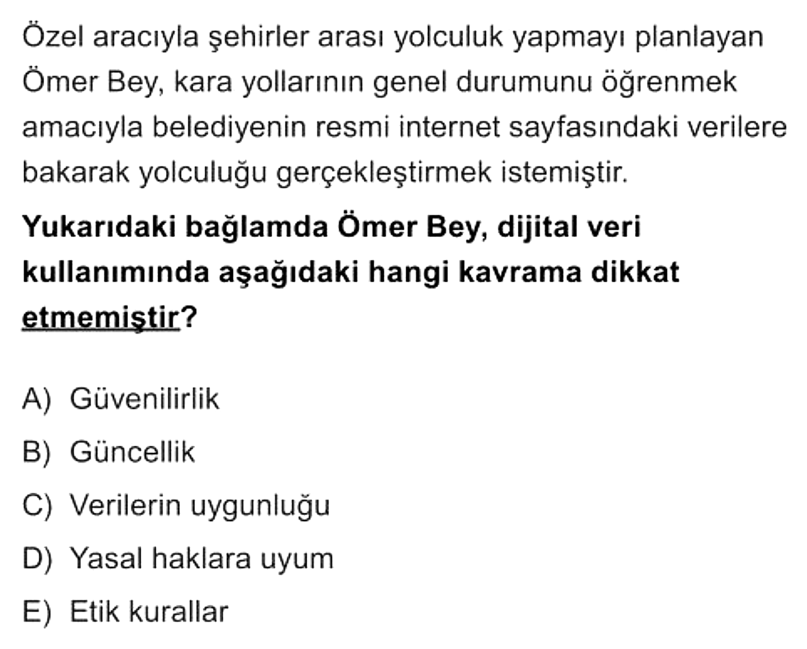
Çözüm
- Ömer Bey şehirler arası yol durumunu öğrenmek istiyor.
- Belediyenin verileri şehir içi yolları kapsar; araştırma sorusunun kapsamıyla uyumlu değildir.
- Dikkat edilmeyen kavram: verilerin kapsamı ve uygunluğu → C.
Cevap: C
Soru 23Cevap: C
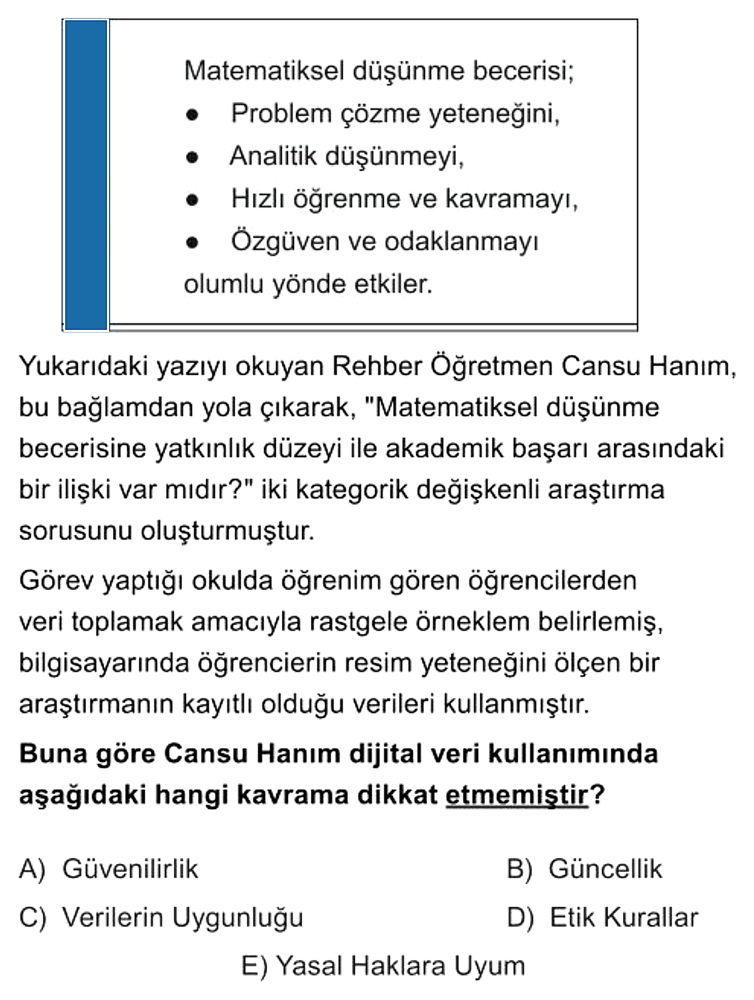
Çözüm
- Araştırma matematiksel düşünme becerisi ile akademik başarıyı inceliyor.
- Cansu Hanım ise resim yeteneğini ölçen bir araştırmanın verilerini kullanmıştır.
- Veri, araştırma sorusunun kapsamına uygun değildir → C.
Cevap: C
Soru 24Cevap: D
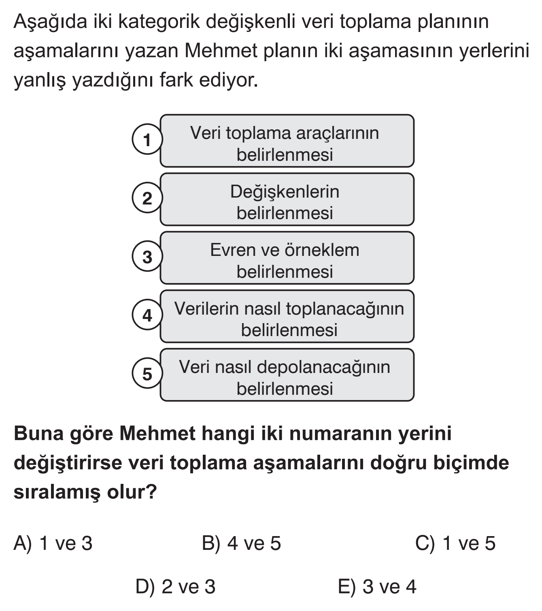
Çözüm
- Doğru sıra: veri toplama aracı → evren ve örneklem → (rastgelelik) → değişkenler → verilerin nasıl toplanacağı → nasıl kaydedileceği.
- Mehmet 2. sıraya değişkenleri, 3. sıraya evren ve örneklemi yazmıştır.
- 2 ile 3 yer değiştirirse sıra doğru olur → D.
Cevap: D